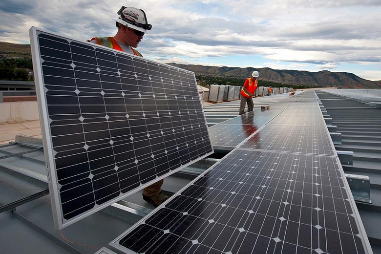

Energy Industry
FESC has an Industrial Partnership and Innovation Strategy that assures active collaboration with the private sector and other partners that will support and guide FESC’s vision, collaborate with FESC in our research, education, innovation, and outreach programs, and provide our students with an unparalleled educational experience to prepare them as R&D and innovation leaders of tomorrow. FESC’s Industrial Partners Program designed to be an effective and efficient avenue for industry to guide FESC activities and benefit from the research, education and outreach activities of the Consortium. As such, part of FESC’s mission is to establish partnerships with companies and other organizations that will play an important role in achieving our goals and objectives. FESC promotes a meaningful exchange between the partner universities and industrial partners from small, medium, and large companies, as well as other organizations such as incubators, research parks, investors, entrepreneurs, and government laboratories.
This section provides links to energy related companies for informational purposes only. Reference herein to any specific commercial products, process, or service by trade name, trademark, manufacturer, or otherwise, does not constitute or imply its endorsement, recommendation, or favoring by Florida Energy Systems Consortium.